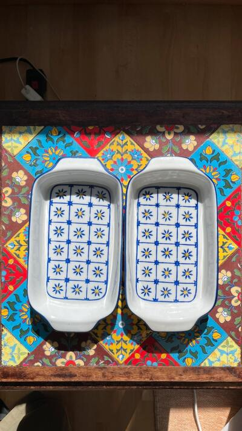
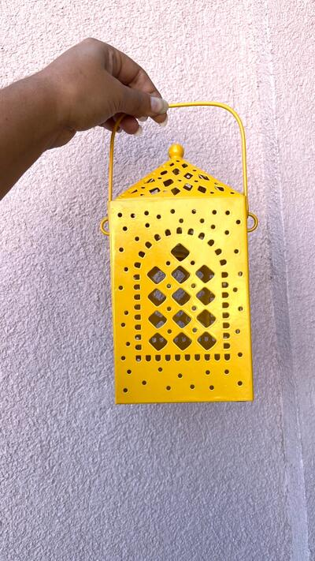
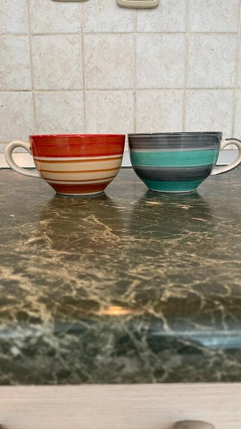
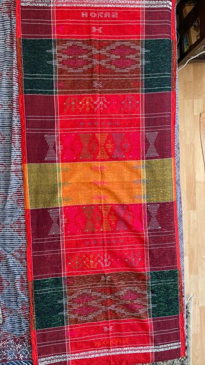

Home things, carried back.
Block-printed textiles, hand-painted ceramics, and small objects that make a Prague flat feel less like a rental. Most of it came back in a suitcase.

Brand new, never used. Beautiful matching set of 2 ceramic oven baking dishes with a blue and yellow floral folk design. Ideal kitchenware for…

Designed with a carry handle, it can be hung or placed on a tabletop for decorative lighting. Bright yellow, metal Moroccan-style lantern features…

Ceramic Soup Bowl from India with Handle Microwave Safe & Dishwasher Safe, Food Grade Material, Multicolour Width 11 cm Height 7 cm

Recognized by UNESCO as part of Indonesia's intangible cultural heritage, Ulos can be worn as an accessory (shawl/scarf/skirt), hung on a wall, used…
Nothing matches those filters.
Prices are converted from Czech koruna at the European Central Bank reference rate and rounded to the nearest euro. Vinted charges in your own currency at checkout, so the amount you pay may differ slightly.
How buying works
- Ask first, if you want. Measurements, fabric, how something actually fits — message me and I will tell you straight, including when a piece is not right for you.
- Buy it on Vinted. Every piece links to its listing. Payment, postage and buyer protection are all handled there, so there is no separate checkout on this site and I never see your card details.
- It posts from Prague. Usually within a day or two of the order. Vinted's buyer protection covers the return if the item is not as described.
Everything is second-hand or one-of-a-kind from my own collection, so each piece exists once — when it is gone it is gone. Sizes are the label size; ask me for real measurements before you buy.